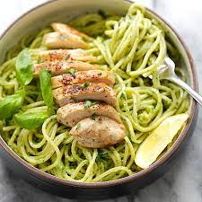

Chicken Pesto Pasta!
This pesto pasta is a delicious way to get you going.

Learn how to make this dish:
Ingredients:
- 1 pound of spaghetti
- 2 boneless, skinless chicken breasts
- 1/2 cup of pesto sauce
- 1/4 cup of grated Parmesan cheese
- 2 cups of fresh spinach, washed and chopped
- Salt and pepper to taste
- 2 tablespoons of olive oil
Preparation:
- Begin by cooking the spaghetti according to the instructions on the package. Drain and set aside.
- Cut the chicken breasts into bite-sized pieces and season with salt and pepper.
- In a large skillet, heat the olive oil over medium-high heat. Add the chicken and cook until browned and cooked through, stirring occasionally, for about 5-7 minutes.
- Add the cooked spaghetti, pesto sauce, and grated Parmesan cheese to the skillet. Toss everything together until well combined.
- Add the chopped spinach to the skillet and continue to cook, stirring occasionally, until the spinach is wilted, for about 2-3 minutes.
- Remove the skillet from the heat and let the pasta cool slightly before serving.
- Serve and enjoy!